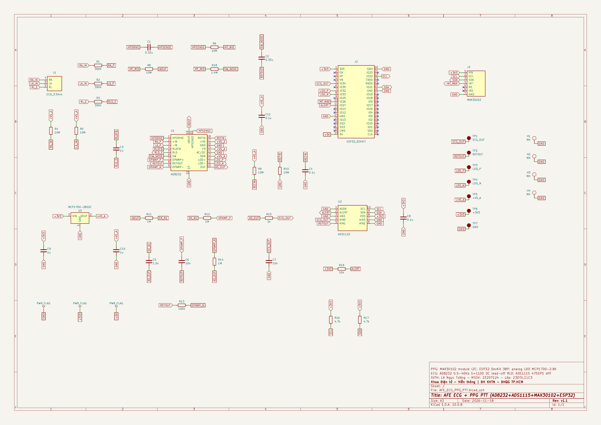
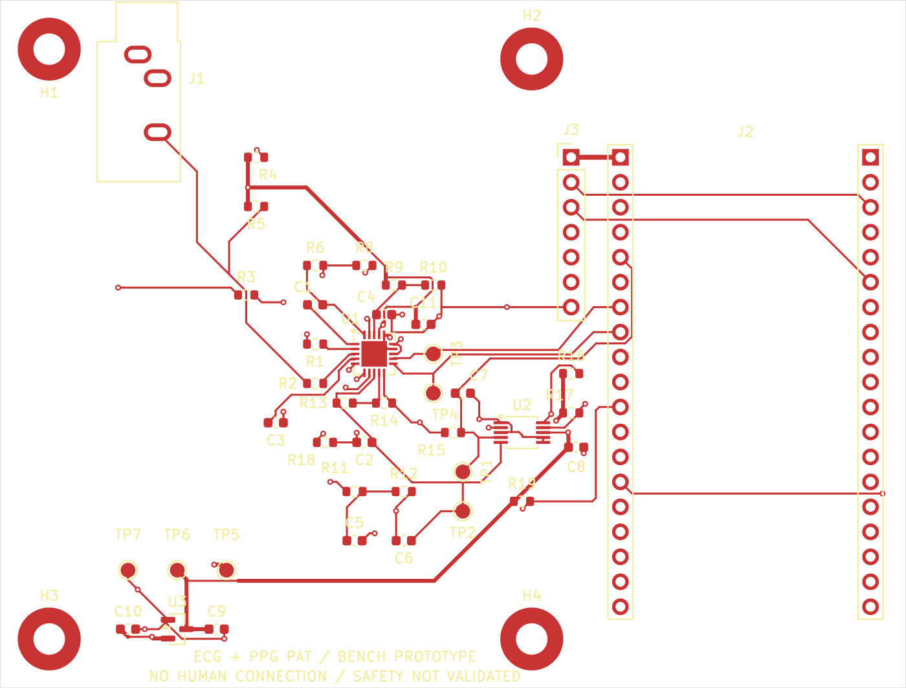
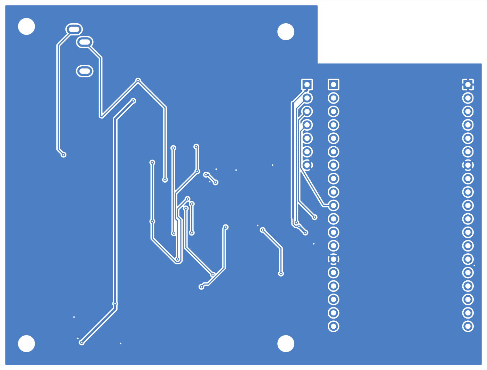
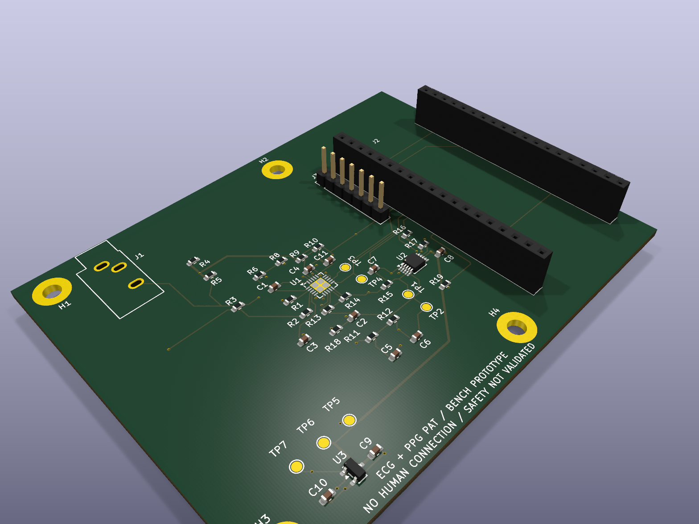
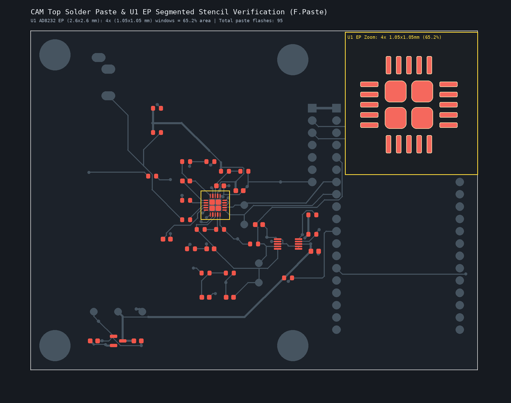

Thời gian lan truyền sóng mạch PTT là khoảng thời gian sóng xung áp lực động mạch di chuyển giữa hai điểm trong hệ mạch máu. Trong y sinh, PTT có tương quan nghịch biến với huyết áp động mạch và độ cứng thành mạch. Khi huyết áp tăng, thành động mạch căng cứng hơn khiến tốc độ truyền sóng mạch tăng lên và PTT rút ngắn lại.
Do phép đo PTT kinh điển cần đặt hai cảm biến dọc theo một động mạch, phương pháp phổ biến trên thiết bị đeo là đo thời gian đến xung PAT, tính từ đỉnh sóng R trên điện tâm đồ ECG đại diện cho thời điểm khử cực thất trái đến chân sóng mạch thể tích quang học PPG thu tại mao mạch đầu ngón tay.
| Khối chức năng | Thông số thiết kế | Cơ sở kỹ thuật và ghi chú |
|---|---|---|
| Kênh đo ECG | 1 chuyển đạo vi sai, 3 điện cực RA, LA, RL Băng thông lý tưởng: 0,5 Hz đến 41,09 Hz Độ lợi danh định: 1100 V/V tương đương 60,8 dB |
IC Analog Devices AD8232ACPZ, cấu hình Cardiac Monitor theo Figure 60 và Figure 66. Chưa đo đáp ứng thực tế trên bench. |
| Dò hở điện cực | Chân LOD+ và LOD− theo cơ chế DC Lead-Off | Phát hiện tuột điện cực qua điện trở kéo lên 10 MΩ. Tương thích mức logic 2,8 V sang 3,3 V cần xác nhận điều kiện xấu nhất. |
| ADC ECG | TI ADS1115IDGST 16-bit Delta-Sigma Tốc độ mặc định 475 SPS, hỗ trợ 860 SPS Giao tiếp I2C Fast-Mode 400 kHz |
Đo vi sai AIN0 − AIN1 với thang PGA ±2,048 V. Chân ALERT/RDY kéo lên +3V3 qua R19 = 10 kΩ kích hoạt ngắt ngoài trên GPIO27. |
| Kênh đo PPG | Module MAX30102 qua đầu nối J3 7 chân Kênh hồng ngoại 880 nm, 400 SPS, 18 bit |
Thứ tự chân J3 từ 1 đến 7: +3V3, SCL, SDA, INT_MAX, RD NC, IRD NC, GND. Địa chỉ I2C 0x57. Chưa chốt mã module thương mại. |
| Đồng bộ thời gian | Bộ đếm 64-bit micro giây trên ESP32 Gói tin tách kênh E và P |
Đọc esp_timer_get_time() trong ISR. PAT thời gian thực từ firmware bị khóa do cờ TIMESTAMP_UNCERTAIN trên kênh PPG. |
| Nguồn nuôi và an toàn | Nguồn cấp 5 V hoặc pin qua DevKit LDO analog MCP1700-2802E đầu ra 2,8 V |
LDO không cách ly điện. Điện trở R1/R2/R3 = 360 kΩ chỉ bảo vệ bench, không đạt chứng nhận an toàn điện IEC 60601-1. |
| Kích thước PCB | 92 mm x 70 mm, 2 lớp FR-4 | Diện tích 6.440 mm², độ dày danh định 1,6 mm, đồng 1 oz. Vùng cấm đồng anten x = 60 đến 92 mm, y = 0 đến 12 mm trên F.Cu và B.Cu. |

AD8232 dùng rail analog +VS_A 2,8 V. Chân 9 OPAMP− nối R13.2 và R14.1; R13 = 100 kΩ về REFOUT, R14 = 1 MΩ về OUT. Độ lợi tầng op-amp danh định K = 1 + R14/R13 = 11. Tầng khuếch đại đo lường IA có độ lợi danh định 100, cho tích độ lợi danh định 1100 trước khi đo kiểm thực tế.
+VS_A. Chân GPIO25 tại J2.9 để hở với điểm no_connect, firmware không điều khiển FR ở mức logic 3,3 V.U2 ADS1115IDGST dùng footprint TSSOP-10_3x3mm_P0.5mm tương thích land pattern DGS. AIN0 nhận ECG_OUT qua mắt lọc R15 = 1 kΩ và C7 = 10 nF xuống GND; AIN1 nối REFOUT. Chân ALERT/RDY có điện trở kéo lên R19 = 10 kΩ nối +3V3 và đi tới GPIO27. Đường bus I2C dùng điện trở kéo lên R16 = R17 = 4,7 kΩ lên +3V3.
U3 MCP1700-2802E đóng gói SOT-23 nhận đầu vào +3V3 ở chân 3, đầu ra +VS_A 2,8 V ở chân 2 và nối GND ở chân 1. Tụ đầu vào C9 = 1 µF, tụ đầu ra C10 = 1 µF, tụ bypass C11 = 0,1 µF đặt sát U1 và C8 = 0,1 µF đặt sát U2. Tụ C10 bắt buộc chọn đúng mã thương mại có điện dung hiệu dụng từ 1 µF trở lên và ESR trong dải 0 đến 2 Ω theo yêu cầu ổn định của MCP1700.
Bo mạch 2 lớp kích thước 92 x 70 mm giữ nguyên 46 footprint, 151 node netlist, 90 lỗ và slot khoan, bốn lỗ M3 nối GND tại H1 đến H4, vị trí đầu jack J1 tại (14; 5,55) hướng ra mép trên, ESP32 J2 tại (63; 16), đầu nối PPG J3 tại (58; 16), bốn via GND cục bộ và hai vùng keepout anten x = 60 đến 92 mm, y = 0 đến 12 mm trên cả F.Cu và B.Cu.
RA_IN, SCL, OPAMP_P và vát góc 45 độ toàn bộ các góc tự do, đưa số góc vuông và góc nhọn tự do về 0 trong khi giữ nguyên 12 góc tại chân pad hoặc via bị khóa vị trí.+3V3 và 19 đoạn trunk +VS_A từ 0,20 mm lên 0,40 mm tại các đoạn đủ khoảng hở, giữ nguyên đoạn neck-down 0,20 mm sát chân pad mật độ cao của U1, U2, U3 và nhánh 0,50 mm giữa J2.1 và J3.1. Bổ sung 4 netclass Default, Power, Analog_ECG, Digital_I2C trong AFE_ECG_PPG_PTT.kicad_pro.clearance và thermal_gap từ 0,20 mm lên 0,25 mm, thermal_bridge_width từ 0,30 mm lên 0,40 mm và refill lại toàn vùng, đạt 0 lỗi starved_thermal.F.SilkS với chiều cao 1,0 mm và nét 0,15 mm ra khỏi pad hàn và via, đạt 0 vi phạm dưới ngưỡng kiểm tra 0,15 mm. Đưa nhãn J2 Value trên lớp F.Fab về tọa độ (12.7, 22.86, 90) nằm gọn trong thân chân cắm 25,4 x 45,72 mm và gắn hai mô hình 3D PinSocket_1x19_P2.54mm_Vertical.step tại x = 0 và x = 25,4 mm.| Hạng mục kiểm tra | Kết quả ngày 18/11/2026 | Tài liệu và phạm vi giới hạn |
|---|---|---|
| ERC trên KiCad 10.0.8 | 0 Errors / 0 Warnings | Hai mục không áp dụng là SPICE model và global label xuất hiện một lần được ghi trong erc.rpt. |
| DRC, unconnected, parity | 0 / 0 / 0, ignored_checks rỗng |
Chạy với --refill-zones --all-track-errors --schematic-parity --severity-all tại drc.json và file rpt gốc. |
| Kiểm silkscreen 0,15 mm | 0 vi phạm trong drc_fab_silk15.json |
Thử trên bản sao tạm .kicad_pro với min_silk_clearance = 0.15, silk_over_copper = error, silk_overlap = error. |
| 7 script CAD và preflight bench | 7/7 PASS và 10/10 preflight PASS | Kiểm tra analog/feedback/pcb netlist, compact layout, local returns, 90 lỗ/slot drill, ZIP 11 file phẳng và bench_bringup_verify.py --preflight. |
| Kiểm tra Gerber và Excellon CAM | Xác nhận từ ZIP tại CAM_*.png |
Kiểm chứng 3 slot G85 tại J1, 38/38 via tented hai mặt và 4 cửa sổ stencil 1,05 x 1,05 mm chiếm 65,2% EP của U1; vẫn cần preview CAM xưởng. |




Firmware esp32_ptt_streamer đọc ngắt ALERT/RDY từ ADS1115 và FIFO từ MAX30102 qua I2C 400 kHz, gắn nhãn thời gian 64-bit từ esp_timer_get_time() và gửi chuỗi ASCII CSV 8 trường qua UDP cổng 5005: seq,timestamp_us,ecg_raw,ppg_ir,lead_off,quality_flags,mcu_skew_us,sample_type.
P riêng biệt, không nhân bản mẫu ECG để tạo luồng đồng bộ giả.TIMESTAMP_UNCERTAIN bằng 128 trên mọi gói P do chưa hiệu chuẩn độ trễ đồng hồ quang học theo từng mẫu trong burst FIFO, và đặt cờ này trên gói E nếu thời gian đọc ADS1115 vượt 1900 us.software/ptt_live_analyzer.py, hai chế độ --udp và --file chỉ kiểm tra chất lượng gói tin và khóa tính PAT với đầu ra "pat": null. Chỉ chế độ --simulate hoặc --timed-csv có cột ppg_timestamp_us đã kiểm chuẩn độc lập mới chạy hàm analyze().quality_error(), tách đoạn khi mất gói hoặc jitter chu kỳ vượt ±35%, và bỏ qua đoạn ngắn hơn 4 giây.target_fs mặc định 1000 Hz, sau đó lọc không lệch pha qua sosfiltfilt với bộ lọc Butterworth bậc 2 dải thông 5 - 15 Hz cho ECG và 0,5 - 8 Hz cho PPG.median + 0.25 * (P99.5 - median) với khoảng cách tối thiểu 300 ms và tinh chỉnh về cực đại biên độ tuyệt đối trong bán kính 100 ms.[120 ms, 450 ms]. Không bù trễ mặc định 5,6 ms; chỉ cộng độ lệch vào pat_corrected_ms khi truyền tham số --ecg-relative-delay-ms từ phép đo phần cứng độc lập.BOM xuất trực tiếp từ schematic tại outputs/print_preflight_20261114/BOM.csv và tệp đặt hàng tại BOM_Orderable_LCSC.csv gồm 20 dòng mã LCSC đã tra cứu trực tuyến ngày 18/11/2026 cho 35 vị trí mua được: 11 tụ SMD 0603, 18 điện trở SMD 0603, 3 IC rời U1 AD8232ACPZ-R7 / C43216, U2 ADS1115IDGSR / C37593, U3 MCP1700T-2802E/TT / C625349, cùng 3 đầu nối J1, J2, J3. Tổng đơn giá linh kiện ước tính trên LCSC là 11,81 USD cho một bo chưa tính PCB trần, phí vận chuyển và hai module rời ESP32 / MAX30102. Bốn lỗ M3 H1 đến H4 và 7 testpoint TP1 đến TP7 mang nhãn PCB_INTEGRATED / DNP.
Các lưu ý đặt hàng quan trọng: chọn C10 mã TCC0603X7R105K500CT C5360793 định mức 50 V X7R để giữ điện dung ổn định cho MCP1700; đặt số lượng 2 thanh J2 mã C429947 1x20P cắt về 1x19P cho hai hàng chân ESP32; kiểm tra khớp cơ khí J1 SJ1-3533N C4992360 tồn kho snapshot thấp 3 chiếc; và kiểm tồn kho trực tiếp khi checkout cho các mã C37593, C82282, C23162, C38070. Hai module ngoài mua rời gồm ESP32-DevKitC V4 38 chân và MAX30102 cần đối chiếu bản xanh MH-ET LIVE so với bản đen, xác nhận thứ tự chân 1..7 và pull-up I2C/INT trước khi cắm vào J2/J3. Bảng tra cứu đầy đủ ghi tại DANH_SACH_LINH_KIEN.md.
Chi tiết từng bước đặt mạch, mua linh kiện và hàn lắp được tổng hợp trong HUONG_DAN_IN_HAN_VA_NGHIEM_THU.md kết hợp bản đồ bo mạch tương tác offline outputs/print_preflight_20261114/Interactive_Soldering_Guide.html với chấm đỏ Pin 1 và bộ lọc từng công đoạn:
tools/flash_esp32.sh --prebuilt hoặc chạy sketch tools/esp32_bench_diag/esp32_bench_diag.ino qua Serial 115200 baud, sử dụng ngưỡng ADC1 LOD_ADC_HIGH_THRESHOLD_MV = 1400 mV trên GPIO32/GPIO33 để khép kín biên độ logic từ rail analog 2,8 V sang ESP32 3,3 V.| Bước | Phép thử | Phương pháp đo | Tiêu chí đạt | Trạng thái | Thiết bị |
|---|---|---|---|---|---|
| 1 | Nguồn và LDO 2,8 V | Kiểm tra chập nguồn trước khi cấp, dùng nguồn hạn dòng đo TP6 +3V3 và TP5 +VS_A. | +VS_A nằm trong dung sai MCP1700-2802E theo tải và nhiệt độ thực. | CHỜ ĐO BENCH | DMM, nguồn DC hạn dòng |
| 2 | Giao tiếp I2C 400 kHz | Quét địa chỉ 0x48 và 0x57, đo rise time đường SDA/SCL với R16/R17 = 4,7 kΩ. | Nhận đúng hai địa chỉ, thời gian tăng nhỏ hơn 300 ns. | CHỜ ĐO BENCH | Logic Analyzer, Oscilloscope |
| 3 | Nhiễu, CMRR và lọc | Đo TP2 REFOUT, quét đáp ứng HPF và LPF lý tưởng 41,09 Hz bằng máy phát hàm. | REFOUT xấp xỉ 1,4 V, ghi nhận độ lợi và băng thông đo thực tế. | CHỜ ĐO BENCH | Máy phát hàm, Oscilloscope |
| 4 | Chức năng Lead-Off | Thử hở mạch và đóng tải trở giả lập 100 kΩ đến 1 MΩ tại đầu vào J1. | LOD+ và LOD− lên mức cao khi hở, xuống mức thấp khi nối tải. | CHỜ ĐO LAB | Mạng điện trở giả lập |
| 5 | Thu nhận sóng ECG | Cấp sóng ECG chuẩn từ máy giả lập vào J1 qua cáp TRS đã đo thông mạch. | Sóng P-QRS-T rõ nét, nhận dạng đỉnh R ổn định. | CHỜ ĐO LAB | Patient Simulator |
| 6 | Cảm biến quang PPG | Thử module MAX30102 đã xác nhận pinout trên mô hình quang học giả lập. | Phân biệt rõ đỉnh tâm thu và chân sóng trên kênh IR. | CHỜ ĐO LAB | Optical Phantom |
| 7 | Hiệu chuẩn PAT | Đo trễ tương đối trên nguồn ECG và PPG chung clock trước khi dùng --ecg-relative-delay-ms. |
Ghi nhận sai số thực nghiệm; không giữ PAT live khi thiếu mốc thời gian PPG. | CHỈ CHẠY MÔ PHỎNG | Nguồn đồng bộ 2 kênh |
Toàn bộ hồ sơ CAD, BOM đặt hàng và công cụ nghiệm thu bench đã cập nhật tại outputs/print_preflight_20261114/ với kích thước bo 92 x 70 mm, 0 lỗi ERC/DRC/Parity, 0 cảnh báo footprint_symbol_field_mismatch, 0 lỗi silkscreen tại ngưỡng 0,15 mm, 7/7 script tests/check_*.py và 10/10 cổng tools/bench_bringup_verify.py --preflight đều PASS, cùng test_protocol_regression.py và test_dsp_ptt_pipeline.py PASS. Bốn ảnh kiểm tra CAM CAM_top.png, CAM_bottom.png, CAM_mask.png, CAM_paste.png đã dựng trực tiếp từ dữ liệu Gerber và Excellon trong ZIP để xác nhận 3 slot G85 tại J1, 38/38 via tented và 65,2% diện tích paste trên EP của U1. Vẫn cần kiểm tra preview CAM của xưởng, xác nhận tồn kho live tại LCSC, kiểm tra khớp cơ khí J1 và pinout module MAX30102 thực tế, và thực hiện đo bench 7 bước với nguồn giả lập. Tuyệt đối NO HUMAN CONNECTION và giữ khóa PAT live khi TIMESTAMP_UNCERTAIN.